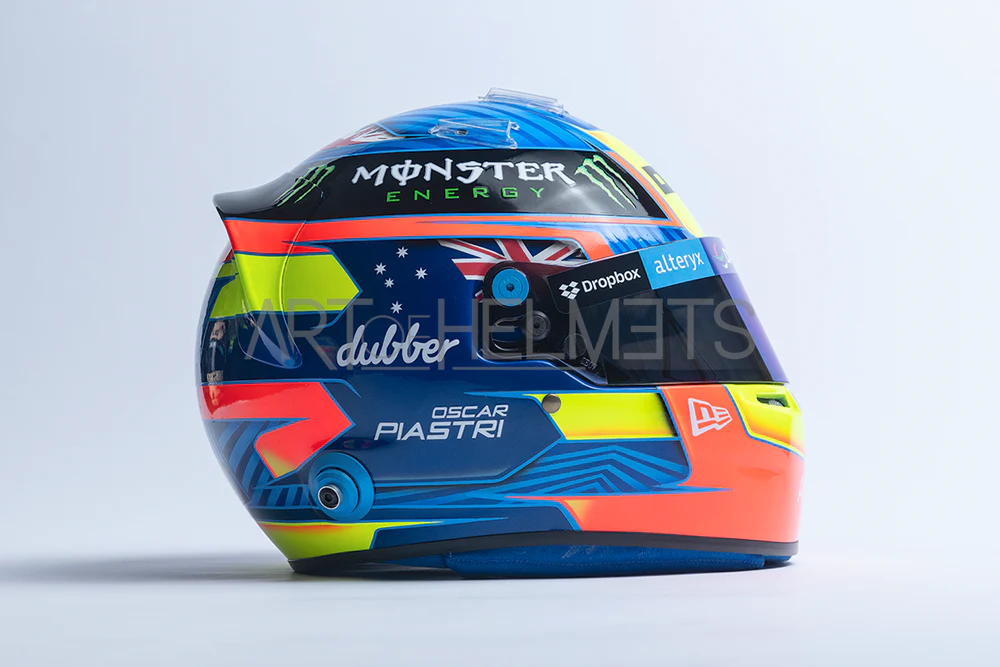
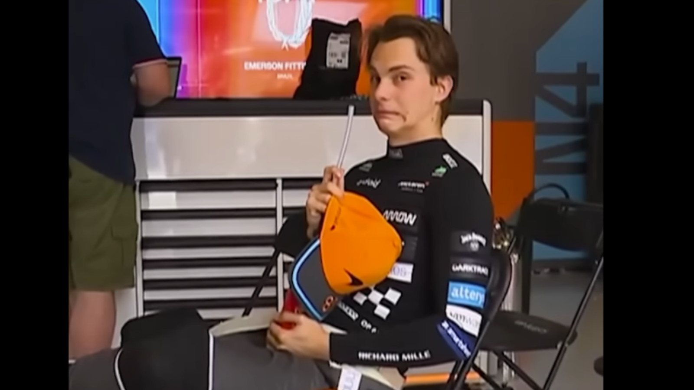

Oscar Jack Piastri
- Team: McLaren
- Land: Australien
- Geburtsort: Melbourne, Victoria
- Geburtsdatum: 06.04.2001
- Alter: 23
- Podien: 9
- Grands Prix gefahren: 43
- Weltmeisterschaften: 0
- Team: McLaren
- Fahrernummer: 81
Der in Melbourne geborene Oscar Piastri, nur einen Steinwurf vom Austragungsort des Großen Preises von Australien entfernt, träumte von einem Tag in der Formel 1 und wurde von den Starfahrern des Sports geweckt, die auf seinen örtlichen Straßen, auch bekannt als Albert Park, herumbrausten. Aber es würde viel Engagement und Opfer erfordern, um diesen Traum Wirklichkeit werden zu lassen, denn ein Wechsel nach Europa – vor ihm von Landsleuten wie Mark Webber und Daniel Ricciardo – war der einzige Weg, um gegen die Besten anzutreten und die Aufmerksamkeit der Entscheidungsträger des Sports auf sich zu ziehen. Piastri nutzte den Erfolg in der australischen Kartszene als Sprungbrett und lernte das Handwerk in Meisterschaften in ganz Europa, bevor er als 15-Jähriger seine ersten Erfahrungen im Formelsport sammelte – zwei Podiumsplätze in der Formel 4 der Vereinigten Arabischen Emirate sind ein Zeichen für die Zukunft. Von da an stellte sich der Erfolg ein. Britischer Vizemeister in der Formel 4. Formel-Renault-Champion. F3-Meister. F2-Champion (mit mehr als 50 Punkten). Piastri kletterte nicht nur die Junior-Formel-Leiter hinauf, sondern stürmte sie hinauf, um laut an die F1-Tür zu klopfen. Piastri war so beeindruckend, dass sich zwei F1-Teams um seine Dienste für 2023 stritten, was dem Fahrermarkt eine neue Dimension und der sogenannten "Silly Season" hinzufügte. McLaren und nicht der langjährige Unterstützer Alpine setzten sich durch und ihr Rookie zahlte es ihnen mit zwei Podestplätzen in einer sehr beeindruckenden Debütsaison zurück.
